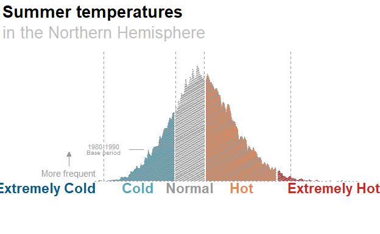

Introduction
Researchers have found that summer temperatures have shifted drastically since the mid-20th century. An eerie discovery that points to the frightening reality that temperatures in the warmer season of the year are now hot or extremely hot in comparison what they were 40 years ago.

The aim of this tutorial is to analyze the visual encoding and replicate this chart. The final section also proposes additional improvements.
The plot in question: the story and how it’s told
The following chart uses data from retired NASA climate scientist James Hansen to show how summer temperatures have shifted toward more extreme heat over the past several decades.
This representation uses bell curves to compare the distribution in the frequency of occurrence of temperature anomalies (y-axis) divided by local standard deviation for the 1951-1980 period (x-axis) obtained by binning all local results for the indicated region and 11-year period into 0.05 frequency intervals. Additionally, this chart is presented along an animation which shows the transition of all recorded periods.
In essence, what this chart aims to communicate is the shift in the distribution of temperatures towards a higher occurrence of hotter temperatures. So, lets take a look at visual encoding it uses to do so…
Visual encoding
Our raw data consists on rows representing anomalies in recorded temperatures ranging from -6 to +6 in 0.05 intervals. The attributes of these data include the frequency of occurrence of these anomalies and the period in which they were recorded. The visual elements used to map the data are as follow
Visual mark: area - the shape of the distribution of occurrence in temperature anomalies
Visual channel (identity): color - determining which anomalies are to be regarded as extremely cold, cold, normal, hot or extremely hot along the X-axis.
Other elements
In order to further the expressive capabilities of these chart, the original authors included further explanatory elements such as tittle and subtitle, text labels and a legend, as well as reference elements such as a reference area that allows comparison with the baseline period and reference lines which emphasize the limits of each temperature group.

Replication
Original and tidy data
The authors behind the publication that inspired this chart post data and visualizations of their own in this website http://www.columbia.edu/~mhs119/PerceptionsAndDice/
From here, we download the ‘shifted data’ table named Data: N.H. Land, Jun-Jul-Aug. Which when imported to R is visualized as follows:
library(ggplot2)
library(tidyverse)
ccdata<- tibble(read.table(
file = "http://www.columbia.edu/~mhs119/PerceptionsAndDice/NH.JJA.11yrs.txt",
header = TRUE,
skip = 1))
write.csv(ccdata, "ccdata.csv", row.names = FALSE)
head(ccdata)# A tibble: 6 × 5
anoms.S X1980.1990 X1991.2001 X2002.2012 X2013.2023
<dbl> <dbl> <dbl> <dbl> <dbl>
1 -6 0 0 0 0
2 -5.95 0 0 0 0
3 -5.9 0 0 0 0
4 -5.85 0 0 0 0
5 -5.8 0 0 0 0
6 -5.75 0 0 0 0In the author’s website they also make available a visualization of the data which tells the same story as the chart in the NYT post, but dispensing of animation or other aesthetics. This serves us to ‘reverse engineer’ our way into understanding the structure our data must follow for us to be able to replicate it using Ggplot.
![Figures in Warm/Cool Dice Colors [for Northern Hemisphere Land]](plot%20from%20hansen.png)
From looking at the first few rows of ‘ccdata’ we can already tell the first step will be to ‘tidy’ this dataset. The second step then, will be to categorize our anomalies into the four groups seen in the NYT post. Our data has temperature anomalies ranging from -6 to +6. we need to create a categorical variable that labels these anomalies from extremely cold to extremely hot. Following these two steps will yield a ‘tidy’ dataset with all the attributes we need our data to have.
ccdata <- ccdata |>
drop_na(anoms.S)
#tidy up dataset
longdata <- ccdata |>
pivot_longer(cols =
c(X1980.1990,
X1991.2001,
X2002.2012,
X2013.2023),
names_to = "period") |>
mutate("period" = str_sub(period, 2)) |>
#create temperature type variable
mutate("temptype" = case_when(
anoms.S < -3 ~ "Extremely cold",
anoms.S >= -3 & anoms.S < -0.5 ~ "Cold",
anoms.S >= -0.5 & anoms.S <= 0.5 ~ "Normal",
anoms.S > 0.5 & anoms.S <= 3 ~ "Hot",
anoms.S > 3 ~ "Extremely hot"))
head(longdata)# A tibble: 6 × 4
anoms.S period value temptype
<dbl> <chr> <dbl> <chr>
1 -6 1980.1990 0 Extremely cold
2 -6 1991.2001 0 Extremely cold
3 -6 2002.2012 0 Extremely cold
4 -6 2013.2023 0 Extremely cold
5 -5.95 1980.1990 0 Extremely cold
6 -5.95 1991.2001 0 Extremely coldNow with the data as we want it, we can head on and start with our graph.
Base plot
I have broken down the code of my base plot in four steps
As a first step we degine our
ggplot()function. This sets up the basic structure of the plot function. It specifies the data (longdata) and aesthetic mappings for the x-axis (anoms.S), y-axis (value), and fill color (temptype). But up to this line, we are left only with an x and a y axis and no markings within it.Secondly, we must define our geom, which is this case is
geom_area(). This adds an area plot to the ggplot with options specifying that the data is in identity form, the stacking position, the number of bins. Note here that thelegendargument has been set tofalsethis is because we wish to add it later on as a separate item.Third, we style our plot. using
scale_fill_manual()we set the fill colors for different levels of the ‘temptype’ variable using their codes in hexadecimal format.In this step we determine the size of our X-axis using
xlim()and we usetheme_void()to set the theme of the plot to a blank/void , essentially removing any axes, labels, or background elements.
baseplot<-
longdata |>
ggplot(aes(x = anoms.S,
y = value,
fill = temptype)) +
#2. Adding the geom which will map our data
geom_area(stat = "identity",
position = "stack",
bins = 30,
show.legend = FALSE)
#3. Custom colors
##saving custom colors to save space later down the road
customcolors <- c("Extremely cold"="#085b84",
"Cold" = "#54a5ba",
"Normal" = "#dfdfdf",
"Hot" = "#eb8550",
"Extremely hot" = "#cc2821")
baseplot<- baseplot +
scale_fill_manual(values = customcolors) +
#4. Axis limits and theme
xlim(c(-6, 6))+
theme_void()
baseplot
At this point, out plot has the general shape we want it to have. But it still needs additional elements to help us understand what is going on.
Annotations
To our baseplot we need to add all the explanatory elements such as labels, tittles, legend and others. So lets take a look at the code for that.
Tittle and subtitle
This element was added using the
labsfunction which sets these elements for the plot.
baseplot <-
baseplot +
#Tittle and subtittle + the color we want it to have
labs(title = "Summer temperatures",
subtitle = "in the Northern Hemisphere") +
theme(plot.title = element_text(color = "black",
hjust = 0.015,
face = "bold"),
plot.subtitle = element_text(color = "gray",
hjust = 0.015))Legend and period lable
We will add our legend using the
annotatefunction which essentially allows us to add text annotation freely along the plot. For example, consider the lineannotate("text", x=0, y=-0.04, label= "Normal", color = "#999999", fontface = 2)This annotates the plot with the text “Normal” at coordinates (0, -0.04) with a gray color and bold fontface. We have done this for all temperature types.
Similarly, using this same function, we will add a label for the corresponding period of the plot. As this
baseplotis set to consider all our data the period it corresponds to is from 1980 to 2023.
#Leged by annotations
baseplot +
annotate("text",
x=0,
y=-0.04,
label= "Normal",
color = "#999999",
fontface = 2)+
annotate("text",
x=-5,
y=-0.04,
label= "Extremely Cold",
color = "#085b84",
fontface = 2)+
annotate("text",
x=-1.8,
y=-0.04,
label= "Cold",
color = "#54a5ba",
fontface = 2)+
annotate("text",
x=1.8,
y=-0.04,
label= "Hot",
color = "#eb8550",
fontface = 2)+
annotate("text",
x=5,
y=-0.04,
label= "Extremely Hot",
color = "#cc2821",
fontface = 2)+
annotate("text",
x=4,
y= 1,
label= "1980-2023",
color = "black",
size = 10,
fontface = 10)
Reference lines
We also have reference lines showing the limits of each temp type in the baseline period. We have added these using
geom_vline()and setting the places where we want it to intercept the x axis inxintercept, the line type and the color we want it to be.
baseplot<-
baseplot +
geom_vline(xintercept = c(-3, -0.5, 0.5, 3),
linetype = "dashed",
color = "gray")
baseplot
Now our chart has almost all the elements it needs. But it still not quite as we want it to be because it doesn’t yet tell the story.
Breaking it by periods
Our baseplot is good for showing all the elements that go into the making of our chart. However, we still need this to be made for each of the period we have data for. We can easily do this by filtering our data using the filter function before our ggplot() fucntion as follows
plot1980.1990<- longdata |> filter(period == "1980.1990") |> ggplot(...
ylim() argument to make this standard through all plots.The following chunk shows this example for the period of 1980 to 1990.
plot1980.1990<-
longdata |>
filter(period == "1980.1990") |>
ggplot(aes(x = anoms.S,
y = value,
fill = temptype)) +
geom_area(stat = "identity",
position = "stack",
bins = 30,
show.legend = FALSE)+
scale_fill_manual(values = customcolors)+
xlim(c(-6, 6))+
theme_void()+
annotate("text",
x=3,
y= 0.35,
label= "1980-1990",
color = "black",
size = 10,
fontface = 10)Once that is done, we can add a few more annotations are needed. Namely those that are placed together with an arrow or another visual element. For this we use the function geom_segment and indicate its positioning with x y coordinates as we have done for text annotations.
#We save the new lables as a function in order to reuse
period_annotations <- function(plot){
plot +
#chart aesthetics
scale_fill_manual(values = customcolors)+
xlim(c(-6, 6))+
theme_void()+
#title and subtitle
labs(title = "Summer temperatures",
subtitle = "in the Northern Hemisphere") +
theme(plot.title = element_text(color = "black",
hjust = 0.015,
face = "bold"),
plot.subtitle = element_text(color = "gray",
hjust = 0.015))+
#Reference lines
geom_vline(xintercept = c(-3, -0.5, 0.5, 3),
linetype = "dashed",
color = "gray")+
#Legend
annotate("text",
x=0,
y=-0.02,
label= "Normal",
color = "#999999",
fontface = 2)+
annotate("text",
x=-5,
y=-0.02,
label= "Extremely Cold",
color = "#085b84",
fontface = 2)+
annotate("text",
x=-1.8,
y=-0.02,
label= "Cold",
color = "#54a5ba",
fontface = 2)+
annotate("text",
x=1.8,
y=-0.02,
label= "Hot",
color = "#eb8550",
fontface = 2)+
annotate("text",
x=5,
y=-0.02,
label= "Extremely Hot",
color = "#cc2821",
fontface = 2)+
#Other annotatins
geom_segment(
x = -4.2,
y = 0.05,
xend = -4.2,
yend = 0.1,
color = "#999999",
arrow = arrow(length = unit(0.2, "cm"),
ends = "last",
type = "closed"))+
annotate("text",
x= -4.2,
y= 0.03,
label= "More frequent",
color = "#999999")
}
#We apply the function to the plot to save the layers
plot1980.1990<- period_annotations(plot1980.1990)
plot1980.1990Once we have that down, we can do it for all the other periods.

In these 4 plots we can already see the shift tha the original plot communicates. But again a key element will help show that better.
Reference area
Along the animaion, the original plot maintains a reference area filled by a lined pattern in order to show the difference in the distribution of the baseline period and all those which follow. For this, we need to create another layer on our plots.
First, I’m creating a data frame with data for the shadow along using the filter function.
df.shadow<-
longdata |>
filter(period == "1980.1990")The code for the shadow is as follows. Here I’m applying it over the plot1991.2001 object so we can see the reference area. Here, it now makes sense to include one annotation I had previously disregarded as it points to the reference area.
referenceshadow<- function(plot){
plot +
ggpattern::geom_area_pattern(data = df.shadow,
stat = "identity",
position = "stack",
show.legend = FALSE,
pattern = "stripe",
pattern_density = 0.2,
pattern_fill = "#999999",
pattern_colour = "#999999",
alpha = 0.09,
pattern_size = 0.01,
pattern_spacing = 0.01,
pattern_linetype = 1)+
#'base period' annotation
geom_segment(
x = -1.6,
y = 0.11,
xend = -2.1,
yend = 0.11,
color = "#999999")+
annotate("text",
x= -3,
y= 0.12,
label= "1980-1990",
size = 3,
color = "#999999")+
annotate("text",
x= -3,
y= 0.1,
label= "Base period",
size = 2.6,
color = "#999999")
}
referenceshadow(plot1991.2001)Here is how it looks when applied to all plots.

Animation
I redefined our baseplot to have a ylim that would be suiting to all time periods and have the lables and fons sizes adjusted accordingly. This new plot I named thewholething as it includes all the elements previously discussed in this post.
Using the function transition_states from the gganimate(). For the animation it’s actually not necessary to make an individual plot for each time period. Rather, we can define that we want our variable period to be what determines our transition states. The result is as follows
library(gganimate)
library(gifski)
# Animate the plots
anim <- thewholething +
transition_states(longdata$period,
transition_length = 2,
state_length = 1)
animate(anim)
Enhancement
The main thing I’d like to improve in this plot is being able to tell the same story but without having to rely on the animation. I would like for this plot to be able to tell us that temperatures are getting hotter every decade from the first look.
So I have proposed 2 enhacements.
Enhancement 1: Ridgelines
The first one involve changing the geom we use to geom_ridgeline_gradient.
library(ggridges)
#enhancement1<-
longdata |>
ggplot(aes(y=value,
x=anoms.S,
height = value,
group = period,
fill = temptype)) +
geom_ridgeline_gradient(show.legend = FALSE)+
scale_fill_manual(values = c("Extremely cold"="#085b84",
"Cold" = "#54a5ba",
"Normal" = "#dfdfdf",
"Hot" = "#eb8550",
"Extremely hot" = "#cc2821"))+
theme_void()+
xlim(-8,8)+
annotate("text",
x=0,
y=-0.04,
label= "Normal",
color = "#999999",
fontface = 2,
size = 6)+
annotate("text",
x=-5,
y=-0.04,
label= "Extremely Cold",
color = "#085b84",
fontface = 2,
size = 6)+
annotate("text",
x=-1.8,
y=-0.04,
label= "Cold",
color = "#54a5ba",
fontface = 2,
size = 6)+
annotate("text",
x=1.8,
y=-0.04,
label= "Hot",
color = "#eb8550",
fontface = 2,
size = 6)+
annotate("text",
x=5,
y=-0.04,
label= "Extremely Hot",
color = "#cc2821",
fontface = 2,
size = 6)+
geom_segment(
x = -4.2,
y = 0.12,
xend = -4.2,
yend = 0.3,
color = "#999999",
arrow = arrow(length = unit(0.2, "cm"),
ends = "last",
type = "closed"))+
annotate("text",
x= -4.2,
y= 0.09,
label= "More frequent",
color = "#999999",
size = 4)+
labs(title = "Summer temperatures",
subtitle = "in the Northern Hemisphere") +
theme(plot.title = element_text(color = "black",
hjust = 0.015,
face = "bold",
size = 20),
plot.subtitle = element_text(color = "gray",
hjust = 0.015,
size = 15))
With this alternative plot we are able to visualize the shift in the distribution of temperatures without relying on the animation. However, having all the data clustered up in the same space might not be the most efficient way of showing the shift with as much emphasis as we would like.
Enhancement 2: Facets
For the second enhacement, I consider the use of facets.
enhancement2<-
longdata |>
ggplot(aes(x = anoms.S,
y = value,
fill = temptype)) +
#2. Adding the geom which will map our data
geom_area(stat = "identity",
position = "stack",
bins = 30) +
#3.
scale_fill_manual(values = c("Extremely cold"="#085b84",
"Cold" = "#54a5ba",
"Normal" = "#dfdfdf",
"Hot" = "#eb8550",
"Extremely hot" = "#cc2821"),
breaks = c("Extremely cold",
"Cold", "Normal",
"Hot",
"Extremely hot"),
name = NULL) +
#4. Axis limits and theme
xlim(c(-6, 6))+
ylim(c(-0.15,0.4))+
theme_void()+
#Tittle and subtittle + the color we want it to have
labs(title = "Summer temperatures",
subtitle = "in the Northern Hemisphere") +
theme(plot.title = element_text(color = "black",
hjust = 0.015,
face = "bold",
size = 20),
plot.subtitle = element_text(color = "gray",
hjust = 0.015,
size = 15),
strip.text = element_text(hjust = 0.09,
vjust = 0,
size = 15),
legend.position = "bottom")+
facet_wrap(~ period,
nrow = 4,
ncol = 1,
scales = "free_x")
enhancement2
In this alternative plot, each period is allocated on their ‘own’ X-axis and distributed vertically. This allows for the visual comparison of the distribution to be faster for our readers.